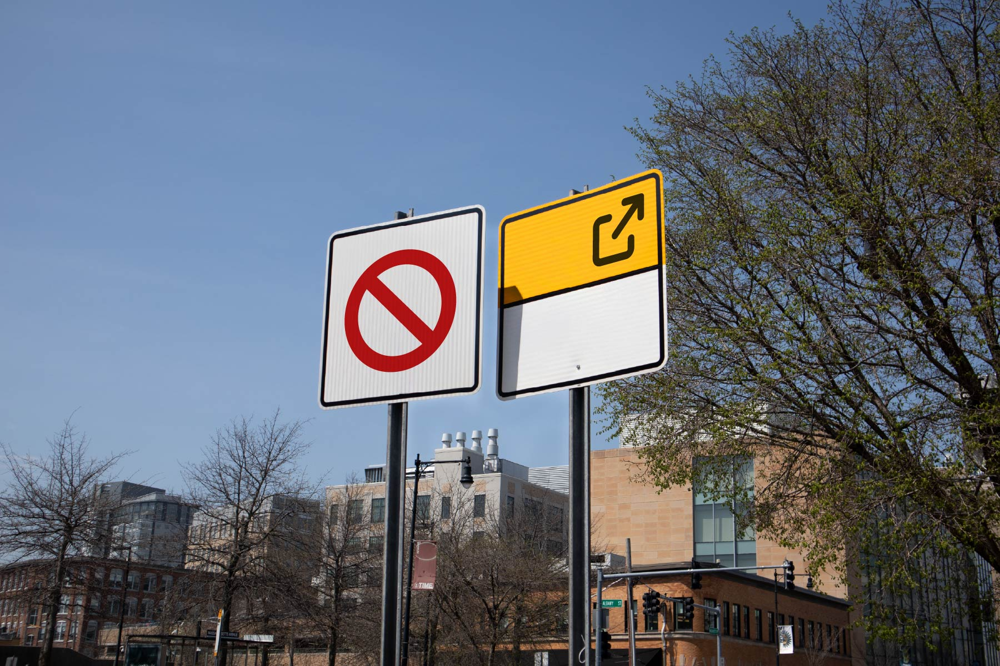

Machineries
Gloria Zhu - Thesis Show
Wiesner Gallery
MIT Stratton Student Center
W20 Room 209
84 Massachusetts Ave, Cambridge, MA 02139
W20 Room 209
84 Massachusetts Ave, Cambridge, MA 02139
April 29th - May 15th
Reception: April 29th 4-6PM
A show about: infrastructure, the Internet, media, and humans.
